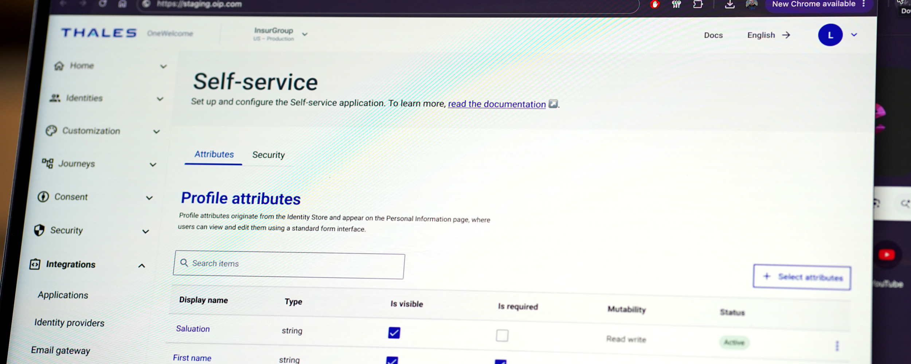

A short one-line teaser about the case study goes here.
Outcome and story of the case study: led the redesign of a multi-role decision support workflow used by thousands of analysts daily, cutting time-to-insight significantly.
